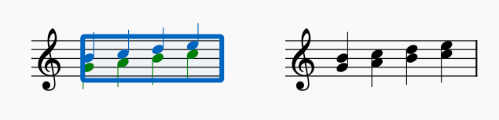
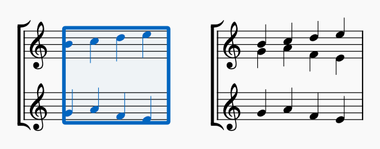
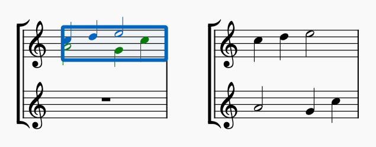
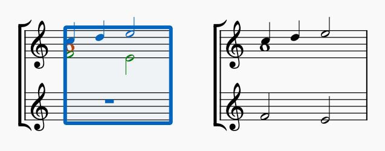
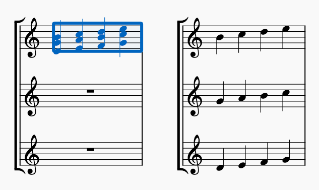
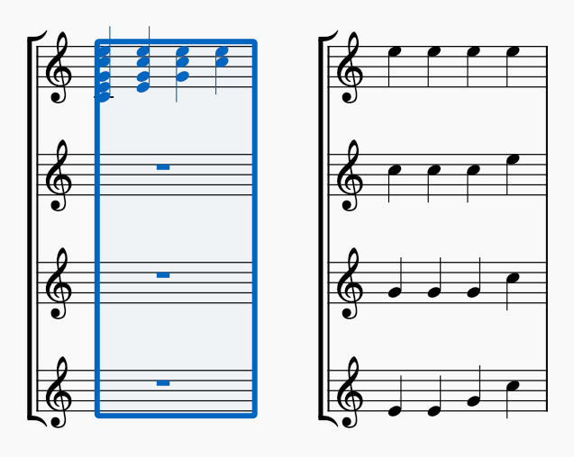

Implode and explode
Overview
The Implode command is used to take multiple voices or staves and combine them into one. The Explode command, its opposite, is used to take a single voice or staff and decombine it into several. These commands can be very useful when arranging, and can also save time when inputting.
Implode
The Implode command allows you to do either of the following:
- Combine multiple voices on the same staff into one voice
- Combine multiple staves containing single voices into separate voices on one staff.
Combine notes from multiple voices in a single staff into one voice
- Select a range of measures in a single staff, where there are multiple voices
- From the menu bar, select Tools -> Implode.

Imploding two voices to a single voice
All selected notes in the staff are now combined in voice 1. For this to work, all simultaneous notes in different voices need to have the same duration.
Combine notes from multiple staves into separate voices on one staff
- Ensure that there is only one voice in each staff to be imploded
- Select a range of measures in the top staff and extend this selection downwards to include up to four staves
- From the menu bar, select Tools -> Implode.

Imploding two staves to two voices
Imploding multiple staves always works upwards, i.e. the topmost staff of the selection is the destination of the combined result. The notes from the uppermost staff of the selection that contains any music will go to voice 1, those from the next staff down to voice 2, and so on. Empty staves are skipped. The lower staves are not automatically cleared.
Explode
Explode allows you to do either of the following:
- Separate multiple voices on one staff into single voices each on their own staff
- Separate a passage of chords in one voice into single notes on multiple staves
The two cannot be mixed in a single operation. If the passage contains multiple voices at any point, this will take precedence and it will be split into voices, but chords will remain intact.
Unlike Implode, Explode will only work on whole measures. If you select part of a measure, the entire measure will be processed.
This result will be notated on multiple staves, so there are some things to be aware of:
- Exploding always works downwards, so the result will be notated starting on the stave containing the selected passage and on the staves directly below it. You may therefore need to move the passage to the topmost destination stave before exploding it, or may need to create extra staves to make space, because material may be lost if there are not enough staves available
- Any existing music on destination staves will be overwritten.
Separate multiple voices on one staff into single voices
To separate multiple voices on one staff into single voices each on their own staff:
- Select the passage you want to explode
- If you wish, extend the selection downwards to include the destination staves desired
- From the menu bar, select Tools -> Explode.

Exploding two voices to two staves
Step 2 is usually not necessary. If you select only the passage on the source stave, MuseScore will determine how many staves are required, which is equal to the number of voices in the passage which contain notes. Empty voices will be skipped.
If you do extend the selection, but select fewer staves than are required (or, if there are not enough staves available in the score), then MuseScore will only transfer as many voices as it can move to the available staves. For example, exploding a 3-voice passage onto two staves will move voice 2 to the lower stave, and then stop, leaving voices 1 and 3 on the upper stave.

Exploding three voices to two staves
If you explicitly select more staves than are required, the extra lower staves will be left untouched.
Separate a passage of chords in one voice into single notes
To separate a passage of chords in one voice in to single notes on multiple staves:
- Select the passage you want to explode, ensuring it is all in a single voice throughout
- If you wish, extend the selection downwards to include the destination staves desired
- From the menu bar, select Tools -> Explode.

Exploding three-note chords to three staves
If you select the passage on the source stave only, MuseScore will determine how many staves are required, which is equal to the largest number of notes in any single chord in the passage. If you explicitly select a range of staves, all the staves will receive notes.
MuseScore explodes the chords one by one, following this logic:
- If the number of notes in the chord matches the number of destination staves, the highest note goes to the topmost stave, the second highest note goes to the next stave down, and so on
- If the number of notes in the chord is greater than the number of destination staves, the chord is split as above, but once the staves run out, any extra notes are lost
- If the number of notes in the chord is less than the number of destination staves, then:
- if the number of staves is an exact multiple of the number of notes, each note will be repeated an equal number of times; for example, exploding a two-note chord onto four staves, the upper note will go to the top two staves and the lower note will go to the bottom two staves
- if the number of staves is not an exact multiple of the number of notes, the notes will be distributed one by one, and then the lowest note will be repeated on the remaining staves.

Exploding chords with different numbers of notes